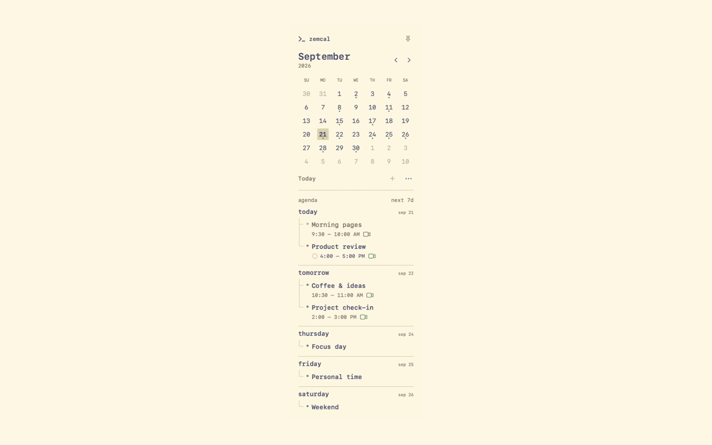
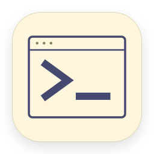
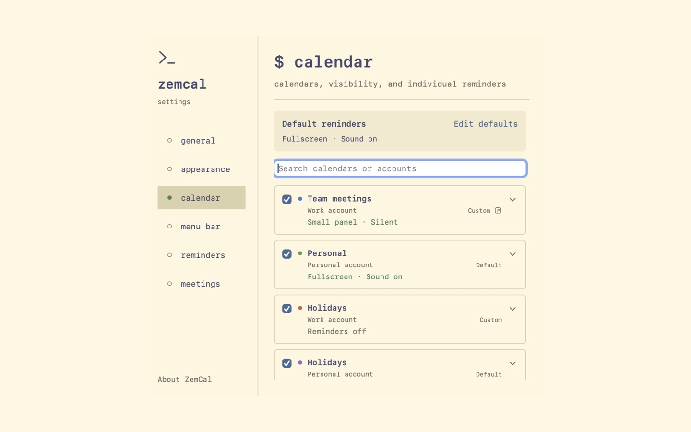
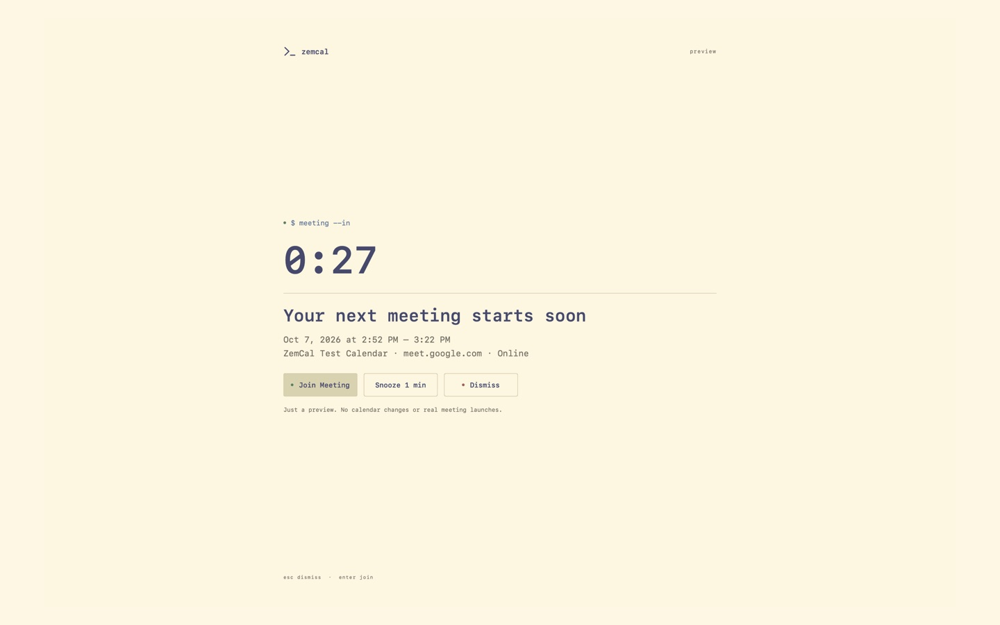
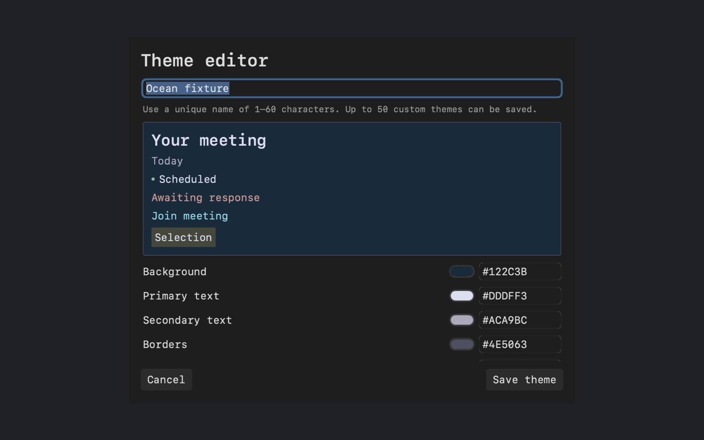

월간 달력과 일정 목록
월을 이동하고 오늘로 돌아오며, 전체 캘린더 앱을 열지 않고도 다음 7일을 살펴보세요.

ZemCal한눈에 보는 월간 달력, 가까이 두는 7일 일정, 회의 시작 전 적절한 알림까지.
macOS 14 이상10개 언어캘린더 데이터는 Mac 안에메뉴 막대에서 ZemCal을 열면 월간 달력과 7일 일정 목록을 함께 볼 수 있습니다. macOS 캘린더 중 표시할 항목을 고르고, 달력을 고정해 두거나 바깥을 클릭해 닫으세요.

월을 이동하고 오늘로 돌아오며, 전체 캘린더 앱을 열지 않고도 다음 7일을 살펴보세요.

표시할 캘린더를 선택하고 각 캘린더의 알림 방식을 따로 설정할 수 있습니다.
지원되는 원격 회의만 알리거나 시간 지정 일정 전체를 대상으로 선택할 수 있습니다. 알림 시각과 표시 방식을 정하고, 참가·미루기·닫기를 선택하세요. ZemCal이 회의에 자동으로 참가하지 않습니다.

전체 화면 또는 작은 패널을 선택하고, 원할 때 부드러운 알림음을 켜세요.

White, Beige, Black 테마와 사용자 팔레트, 글씨 크기를 설정할 수 있습니다.
권한을 허용한 뒤 Apple EventKit으로 Mac의 캘린더를 읽습니다. 일정 정보와 설정은 기기에 저장됩니다. 계정·클라우드 동기화·분석·추적 기능이 없습니다.